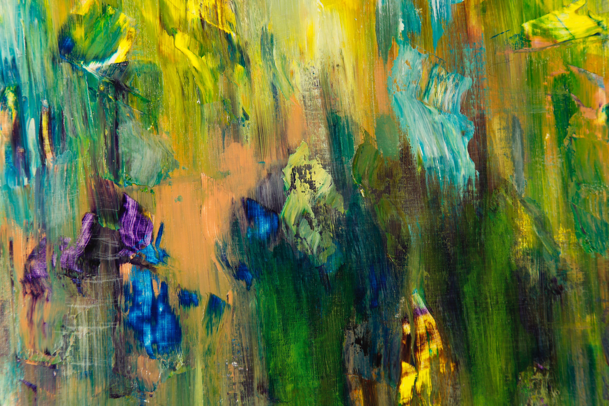
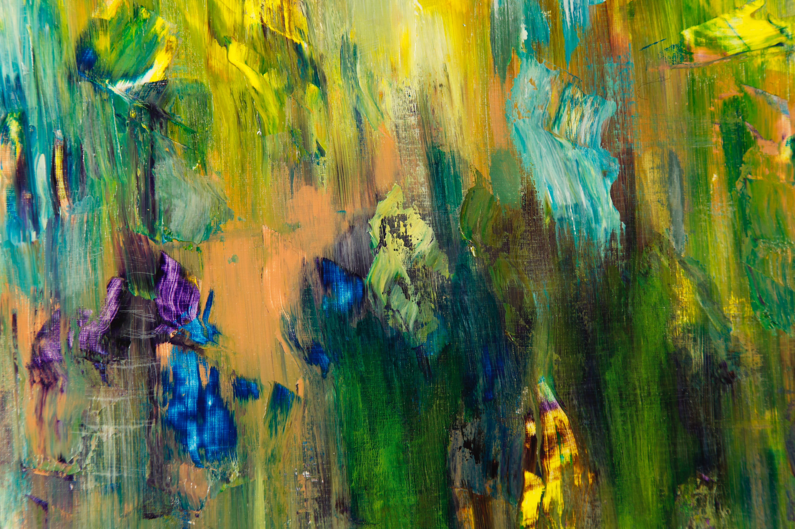

|
Shaian SinghShaian came into the world in the year 1994 in Chaguanas. She is the daughter of a civil engineer who taught herself how to draw and paint. Inspired by her mother, Shaian started drawing at the age of six. Inevitably, Shaian launched her career as a freelance illustrator, and this started with covers of paperback books where she developed and displayed her penchant for realistic depictions of fantastic scenery. She also worked on several assignments where she painted reconstructions of the cultural heritage of Trinidad and Tobago. |
|---|

 
